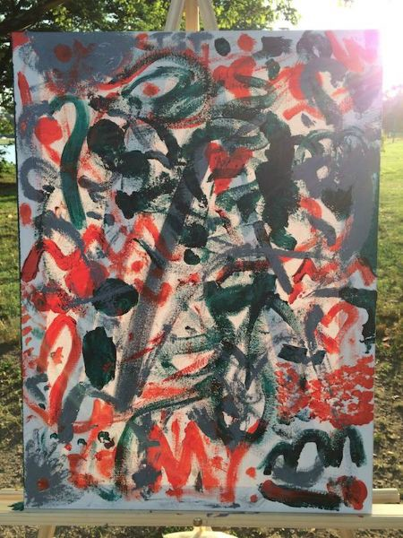

There is a common belief that the ability to be creative is acquired by some lucky few at birth; that just a small minority of us are born with creative DNA. We say that Bonnard, Pollack and da Vinci were born-to-be artists, as if their ability to walk and talk was preceded by a desire to create.
Three years after his death in 1973, Time Magazine attributed Picasso with saying “Every child is an artist. The problem is how to remain an artist once he grows up.”
This idea that we are all born with a creative ability seems to be more accurate. It is not destiny that determines which of us grow up to be artists and which of us end up as accountants (the accountants that try to be too creative usually end up in prison). Instead, it is the environment that we grow up in that has a greater impact on whether or not creative ability will endure through to adulthood.
Creativity is a Muscle
The simple reality is that creativity is a muscle and, as with all muscles, exercise is the only way to make it stronger. Picasso may have been the son of a painter, but his mastering of the paintbrush was developed over years of training that began very early in his childhood.
Creativity is not unlike any other skill or ability — it may take a lifetime to become a master, but it only takes a moment to get started.
A well-known principle in behavior science states the smaller the undertaking, the more likely you are to complete it. It is unlikely that you may go from zero to marathon runner without first setting a more modest goal of running your first 5k.
We should view creativity through this same lens. The binary view we have of creativity — that we are either creative or we aren’t — creates an intimidating culture for those who may just be getting started. It takes a note to start a song, a sentence to start a novel, and just one stroke to start a painting.
Just One Stroke
A year ago, I was drawn to the challenge of inspiring the latent creative capacity of a community. One Sunday morning, I set up an easel with a blank canvas by the Charles River in Cambridge, MA. I left three tubs of paint, three brushes, and a note that said: “Do something creative. Limit one stroke per person.”
An hour later, over twenty people had contributed to the start of a painting through the smallest effort possible: just one stroke.
Throughout the day, I watched a diverse group of people dip their toes into something creative and contribute to this community canvas. It was incredible to watch people interact with it. I often saw a large group of people stroll right by it, and then one curious person in the group would stop, walk back, add a stroke, and then invite the entire group over. It was truly collaborative.
By the end of the day, over one hundred people had added to this first painting.
The following Sunday, I brought out a new canvas with a new set of colors. I repeated this every weekend, weather permitting, through the Fall until I was finally deterred by Boston’s lovely winter to pause the project.
Children were especially keen to add to the paintings, and often broke the one stroke rule (totally acceptable). One morning when I rolled the canvas out there, a young family was waiting behind me while I set it up. The young boy immediately grabbed the brush and went at it, while the mother told me he has painted on three or four of them already, and that it has become a part of their Sunday routine. The father then looked over at the mother and said: “He really likes this — maybe we should get him an easel.” That quote made the project for me. If all this effort did was inspire one parent to promote the arts to their child, it would still be a success.
But I have reason to believe that it has done more than that. To date, the community has painted a dozen paintings together and about a thousand people have contributed in total.
Each of the paintings is unique and shows creative diversity, but they all carry the perhaps inevitable style of spaghetti mush (that’s the technical term). Every single one of the paintings offers a story. I once watched three teenagers paint over the entire painting in solid green, snap the brushes in half, and proceed to stab the canvas. I may not agree with their approach, but they certainly produced the most unique painting of the set.
I’m excited to continue this project this summer, and will be expanding to new locations in and out of Boston. If you would like to follow along, please feel free to view all of the paintings on the website, follow the project on Twitter, or share the Facebook page with your friends.
If you are doing something similar in your own community, or would simply like to chat, I would love to hear from you!